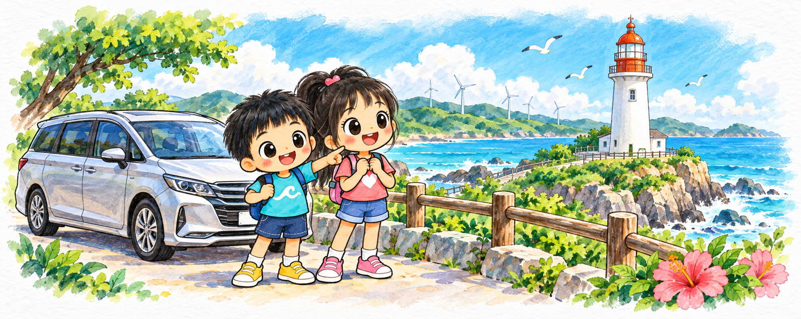
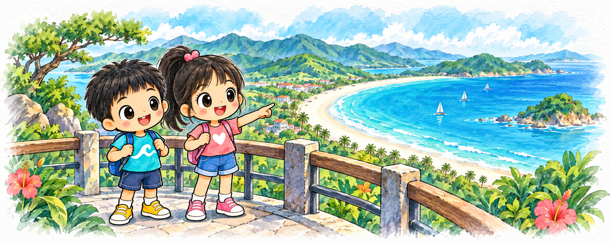
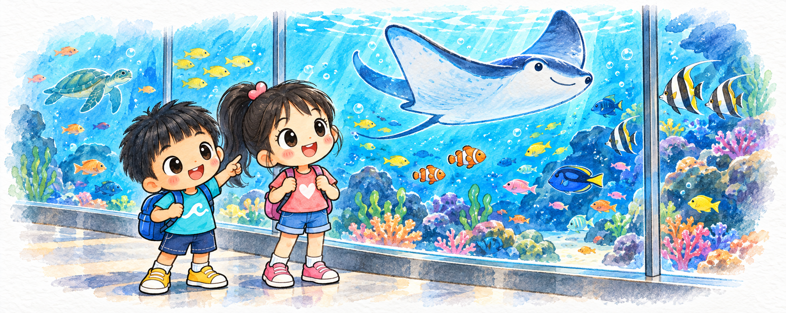
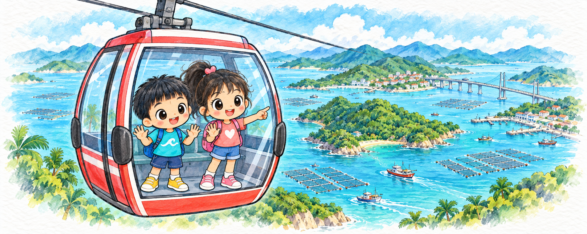
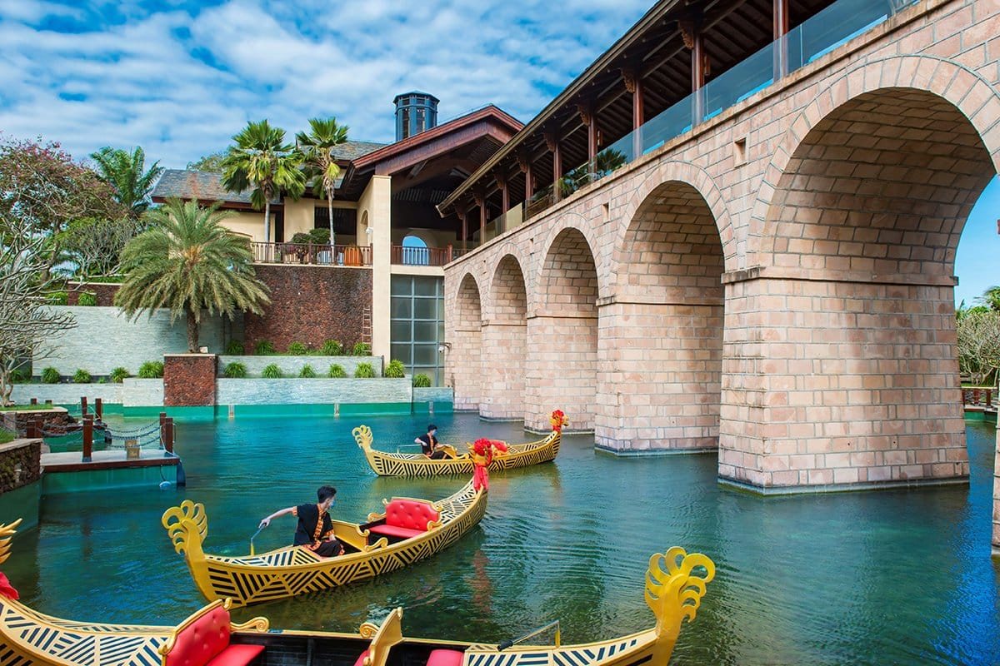
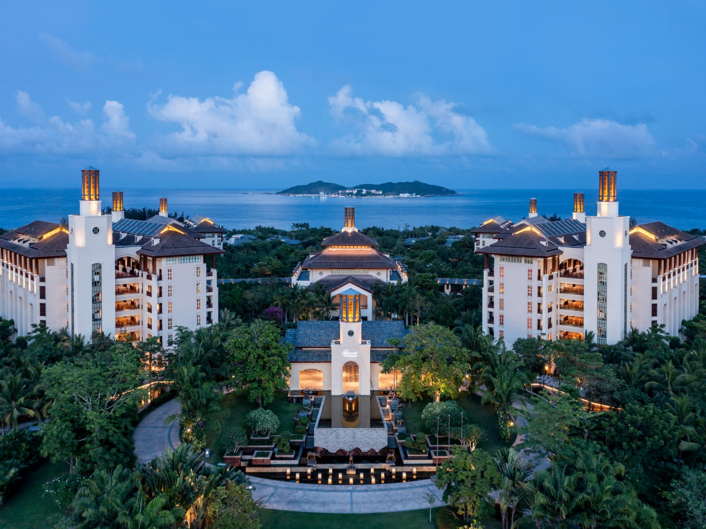
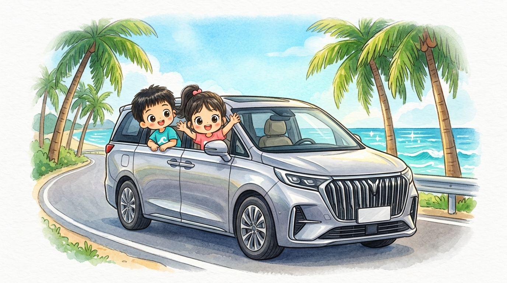

咚咚 × 甜心的海南大冒险DAY 1 / 9月26日 · 周六
海口龙华区 · 骑楼老街与水巷口
01海口骑楼与鸡饭
08:00-10:50 · 重点安排
实景资料图：携程旅行 · 海口骑楼老街
老街开胃，海南出发
骑楼拱廊串起中山路和水巷口。早餐吃海南粉，稍晚再尝文昌鸡；把海口压成一条步行小环线，给文昌沿海段留时间。
这一站，怎么玩
08:00早餐＋骑楼短线
10:00肥婆兰用餐目标，营业须核
10:50全员回车，驶往铺前
带娃重点
4大2小同车；行李不留在显眼处，孩子下车活动全程成人看护。
出发前确认
肥婆兰若未开或排队过长即跳过，不保证10点出锅。停车场到门店按地图步行。
一路向海
一起长大
 咚咚 7岁半 × 甜心 9岁
咚咚 7岁半 × 甜心 9岁
咚咚 × 甜心的海南大冒险DAY 1 / 9月26日 · 周六
文昌铺前镇 · 糟粕醋发源地
02铺前老街
12:00-12:40 · 重点安排
实景资料图：360百科 · 铺前老街骑楼图册
骑楼老味，一碗糟粕醋
文昌铺前的胜利街保留了连绵骑楼与渔港小镇气息。这一站只做短逛和碗装小吃，避免连续两顿正餐挤掉海岸时间。
这一站，怎么玩
12:00到老街，短走骑楼拱廊
12:15林花糟粕醋等，现场核店
12:40最晚出发木兰头
带娃重点
酸辣调料另放；孩子可选海南粉、米饭等清淡熟食。
出发前确认
是铺前胜利街，不是文南老街；不保证“完全未商业化”。
一路向海
一起长大
咚咚 7岁半 × 甜心 9岁
咚咚 × 甜心的海南大冒险DAY 1 / 9月26日 · 周六
文昌铺前镇 · 木兰湾风车海岸
03木兰灯塔与风车
13:15-13:30短停 · 重点安排
符为骊 摄；南海网、新海南客户端
白色灯塔，把海风记下来
木兰头灯塔的识别点是白色圆柱塔身与橙红色灯室。沿海路上的风车、海岸和岩石适合车览，午后只选一个合法停车点短停。
这一站，怎么玩
12:40铺前出发
13:15灯塔外观与海岸合影
13:30沿海路驶向龙楼
带娃重点
15分钟短停，补水防晒；不登礁石、不下水，不把午后海风当防晒。
出发前确认
不安排登塔。蓝色P标识和车位以现场为准，不在弯道或路肩停车；抱虎角不绕入。

木兰湾风车海岸，吹吹太平洋的海风！
咚咚 × 甜心的海南大冒险DAY 1 / 9月26日 · 周六
文昌龙楼镇 · 铜鼓岭月亮湾
04铜鼓岭望月亮湾
15:40-17:10 · 重点安排
海南日报记者 袁琛 摄；南海网刊载
站在山海之间，看一弯蓝
从铜鼓岭高处眺望，月亮湾的弧形海岸与青绿山体展开。主线选择往返观光车和少量观景步行，不增加石头公园或发射场。
这一站，怎么玩
15:40停车、检票、乘观光车
观景时段精选一个视野好的观景点
17:10回到车辆，前往东郊
带娃重点
山顶有步行和日晒，并非全程坐车；雷雨强风放弃登高。
出发前确认
15:50仍未到停车场或观光车排队过长，跳过上山。此为行程截点，不是官方止入时间。

站在铜鼓岭揽月台，看一弯碧蓝月亮湾！
咚咚 × 甜心的海南大冒险DAY 1 / 9月26日 · 周六
文昌东郊镇 · 椰林晚霞与椰子鸡
05东郊椰林
18:10-19:15 · 重点安排
南海网拍客专栏摄影师 雪真 摄
椰林晚风，一锅椰子鸡
椰林与海岸是东郊最鲜明的风景。先在百莱玛片区合法开放海岸短散步，再吃预先点好的椰子鸡，为夜间转场保留休息。
这一站，怎么玩
18:10-18:30海岸散步与晚霞光影
18:30-19:15椰子鸡晚餐，提前叫餐
19:15启程潭门，途中轮换休息
带娃重点
不保证海上落日，不追太阳赶路；暗后不去礁石和陌生海滩。
出发前确认
百莱玛仅作临时定位，不代表已订酒店／餐厅。鲜椰价格到店核，不写固定低价。
 海滩踩沙散步，我们的沙堡今天竣工！
海滩踩沙散步，我们的沙堡今天竣工！
咚咚 × 甜心的海南大冒险DAY 1 / 9月26日 · 周六
琼海潭门镇 · 渔港与首夜住宿
06潭门夜宿与渔港
9.26晚／9.27午餐 · 重点安排
实景资料图：搜狐 ·《潭门渔港见闻》
今晚靠岸，明天看海洋故事
潭门渔港的船只与码头作业呈现东海岸生活。本次暂以潭门片区为住宿锚点，让第二天的博物馆与午餐少折返。
这一站，怎么玩
9.26 21:15抵达片区目标，酒店未定
9.27 08:55从临时住宿锚点出发
11:20-12:10博物馆后渔港午餐
带娃重点
订房先看停车、床位、退改和真实距离；4大2小按需要订两间房。
出发前确认
9.26-27处于中秋假期，旧案300-450元不是已核实时房价；若住博鳌需重算次晨出发。
 一起走进水上人家，发现大海的故事
一起走进水上人家，发现大海的故事
咚咚 × 甜心的海南大冒险DAY 2 / 9月27日 · 周日
中国海南南海博物馆 · 琼海潭门
07南海博物馆
09:30-11:00 · 重点安排
实景资料图：中国新闻网 ECNS · 南海博物馆开馆图集
一件出水瓷器，一段远航故事
以南海历史与海洋文化为主线，带孩子观察沉船出水文物和海洋自然展陈。只选重点细看，保留他们的问题，不赶全馆。
这一站，怎么玩
09:20停车后到北门安检候场
09:30按当前开馆时间参观
11:00开始离馆，去潭门午餐
带娃重点
让孩子各挑一件最想了解的展品；小休、饮水和洗手间纳入90分钟。
出发前确认
馆方现行公告为9:30开馆。家庭按最新实名入馆规则，不照抄“必须提前3-7天预约”。

深海大视窗前，鳐鱼和鲨鱼从头顶游过！
咚咚 × 甜心的海南大冒险DAY 2 / 9月27日 · 周日
陵水牛岭 · 5A海岛玻璃海
08分界洲岛
14:35-16:30条件游览 · 重点安排
海南分界洲旅游股份有限公司／分界洲岛景区官网
开航才出发，蓝海慢慢看
分界洲岛近岸山海与清澈海水适合轻量海岛体验。主线只选近码头看海和一个正规互动项目，不追半山木屋与全岛打卡。
这一站，怎么玩
13:55-14:35陆侧停车、验票、候船登岛
14:35-16:30海景＋开放的鳐鱼互动择项
16:30开始排队离岛，目标17:10取车
带娃重点
鳐鱼不等于蝠鲼，互动需工作人员指导；不宣称野生、全海南独家或保证摸到。
出发前确认
9.27开航和互动尚待确认。官网近期有天气停航，观光车恢复也需核；停航直接转凯悦。
一起走进水上人家，发现大海的故事
咚咚 × 甜心的海南大冒险DAY 2 / 9月27日 · 周日
陵水黎安镇 · 海洋欢乐世界凯悦
09富力海洋凯悦
18:00-18:35入住 · 重点安排
Hyatt／海南富力海洋欢乐世界度假区凯悦酒店官网
海湾旁的城堡，今晚住这里
位于陵水黎安的凯悦酒店与海洋主题度假区相邻。本次已确认住宿含门票，但夜场、跨日入园和儿童名额仍要逐项核清。
这一站，怎么玩
18:00车辆到达目标，停车取行李
18:00-18:35入住、核票权和明日安排
18:35按前台指引前往住客入口
带娃重点
房型景观、儿童设施和泳池开放均以订单与当天为准；夜游后不追加夜泳。
出发前确认
地址海风大道8号；酒店官方电话0898-83091234。含票不自动等于全项目／无限次入园。
一路向海
一起长大
咚咚 7岁半 × 甜心 9岁
咚咚 × 甜心的海南大冒险DAY 2 / 9月27日 · 周日
海南海洋欢乐世界 · 室内馆与摩天轮
10海洋欢乐世界
9.27夜场＋9.28上午 · 重点安排
海南海洋欢乐世界／海南富力海洋欢乐世界度假区官网
晚上看灯火，上午看海底世界
把乐园拆成夜景与室内参观两段。夜间在摩天轮和当日演出中择优；次日主攻一个水族馆，避免演出排队拖延后续午餐和索道。
这一站，怎么玩
9.27 19:25-20:30夜景＋一项体验，场表为准
9.28 09:30-10:00到入口安检候场
10:00-11:15室内主馆，11:15开始出园
带娃重点
现行公开票务页列10点开园。孩子两人的身高、项目限制与收费需要分开确认。
出发前确认
不能承诺9.27有20点无人机＋烟花。主馆名称以南海秘境等现场导览为准，不沿用未核实的“蓝海宝藏”。
深海大视窗前，鳐鱼和鲨鱼从头顶游过！
咚咚 × 甜心的海南大冒险DAY 3 / 9月28日 · 周一
陵水新村港 · 疍家海上浮城
11新村港疍家午宴
12:30-14:00含接驳 · 重点安排
实景资料图：澎湃新闻 ·《陵水·新村渔港：疍家风情》
水上人家的午饭时光
规则排列的养殖网箱和水上屋舍是新村港的特色。选择正规载客船和明码标价的餐饮，近看渔业日常，再返回陆侧索道站。
这一站，怎么玩
12:30-12:45穿救生衣，乘船上鱼排
12:45-13:30午餐＋观察渔排生活
13:30-14:00返岸，转猴岛陆侧站
带娃重点
只观察刺豚，不诱导鼓气、不徒手摸刺；不把刺豚粥列入孩子菜单。
出发前确认
提前让船家发准确集合点与停车点。若风浪不适或上菜晚，改岸上吃饭，不压索道返程。
一起走进水上人家，发现大海的故事
咚咚 × 甜心的海南大冒险DAY 3 / 9月28日 · 周一
陵水新村镇 · 跨海索道与猴岛
12南湾猴岛索道
14:00-16:10含往返 · 重点安排
南湾猴岛生态旅游区供图；海南省旅游协会刊载
从空中，看见海上浮城
跨海索道提供俯瞰新村港鱼排的视角。岛上只走一段观察路线，保留足够时间排队返回陆侧，不把索道旅行理解成两小时净游玩。
这一站，怎么玩
14:00-14:30检票、候索道、上岛
14:30-15:20短线观察，食物收包
15:20-16:10返程排队、出站、取车
带娃重点
不投喂、不接触猕猴，不外露食物和塑料袋；索道大风雷雨停运则取消。
出发前确认
15:00仍未上行就放弃。买票核实往返索道和儿童条件；不使用“亚洲最长”作为承诺。

凌空飞渡大海，俯瞰万亩海上浮城！
咚咚 × 甜心的海南大冒险DAY 3 / 9月28日 · 周一
三亚海棠湾 · 费尔蒙度假慢生活
13海棠湾费尔蒙
17:10到店目标 · 重点安排


实景资料照片
实景资料图：Snaptaste · 费尔蒙韵河木船
旅程放慢，把傍晚交给酒店
中式庭院、木作与韵河构成费尔蒙的度假景致。到店手续和休整后，只安排游船或泳池其中一项，把余力留给夜晚。
这一站，怎么玩
16:10-17:10从猴岛陆侧驶往海棠湾
17:10-17:45办理入住与休息
17:45-18:25已约游船或开放泳池二选一
带娃重点
游船与泳池均成人陪同；海棠湾不安排下海游泳。
出发前确认
游船需出发前联系酒店，不能等入住才假设马上有船；晚到直接庭院散步／休息。
一路向海
一起长大
咚咚 7岁半 × 甜心 9岁
咚咚 × 甜心的海南大冒险DAY 3 / 9月28日 · 周一
三亚海棠区 · 林旺夜市大排档
14林旺夜市
19:20-20:20 · 重点安排
实景资料图：去哪儿攻略 · 林旺夜市
椰子鸡和清补凉，收好前三天
从酒店出发到坐下吃饭，需要把开车、停车和步行一起计算。椰子鸡、炒粉与清补凉可按家人口味搭配，不追摊位数量。
这一站，怎么玩
18:50-19:20驾车、停车、步行入市
19:20-20:20晚餐，确认单价与份量
20:20-20:50回费尔蒙休息
带娃重点
热锅远离孩子；熟食为主，点餐留意过敏和辣度。
出发前确认
若猴岛排队或入住延迟，直接改酒店晚餐。9.29-30另行规划，本版不延用旧日程。
一路向海
一起长大
咚咚 7岁半 × 甜心 9岁
咚咚 × 甜心的海南大冒险
前三日日程表 · 2026.09.26—09.28
| 05:35 - 08:00 |
海口站取车整顿 |
火车抵站交接MPV，分发儿童对讲机，沿滨海大道向东整顿出发 |
| 08:00 - 09:30 |
骑楼老街 (水巷口) |
姚记辣汤饭/亚妹正宗海南粉暖胃；看水巷口骑楼群，尝鲜文昌鸡 |
| 09:30 - 11:30 |
海南省博物馆 |
国家一级馆强劲冷气避暑，看“华光礁I号”沉船、苏轼与琼州非遗 |
| 11:30 - 13:15 |
跨海文大桥 ➔ 铺前老街 |
过海文大桥抵铺前胜利街，吃百年老字号【林花糟粕醋】消暑酸辣小吃 |
| 13:15 - 15:45 |
最美风车海岸 (木兰湾) |
旅游公路自驾，打卡白色风车、亚洲第一木兰灯塔、黑礁石踏浪拾贝 |
| 15:45 - 17:15 |
直奔东郊椰林 (铜鼓岭免进) |
避开正午暴晒与爬山排队，经旅游公路直达东郊椰林，沿途车览山海 |
| 17:15 - 19:30 |
东郊椰林 (日落+椰子鸡) |
百莱玛海滩踩沙散步、喝现砍新鲜文昌红椰、椰林深处纯椰水椰子鸡 |
| 19:30 - 21:15 |
夜行前往琼海潭门 |
经清澜大桥走快速路驶往潭门老渔港（65公里），夜宿渔港海景客栈 |
| 08:30 - 09:20 |
早餐与退房出发 |
客栈清晨散步，早餐后收拾行李出发（车程仅约20分钟） |
| 09:20 - 11:20 |
中国南海博物馆 |
强劲冷气避暑，看800年南宋华光礁I号沉船、万件出水瓷器与抹香鲸 |
| 11:20 - 12:15 |
潭门老渔港海鲜午餐 |
出门即老码头排档，品尝现捞白灼小海鲜、海白野菜豆腐煲、清蒸海鱼 |
| 12:15 - 13:45 |
高速直达分界洲岛 |
走G98高速直达牛岭码头（80公里/55分），两家孩子车内深度午睡 |
| 13:45 - 17:00 |
分界洲岛 5A 景区 |
10分快艇破浪；浅滩亲手摸喂野生魔鬼鱼；果冻海踏浪捉小寄居蟹 |
| 17:00 - 18:00 |
驱车直达富力凯悦 |
出岛取车沿黎安海港20分钟直抵酒店，办理入住豪华海湾客房 |
| 18:30 - 20:30 |
海洋欢乐世界夜游 |
南海之眼摩天轮俯瞰灯火；园区简餐；广场观赏无人机星空编队秀 |
| 20:30 - 21:00 |
回酒店安稳休息 |
步行回房，或去凯悦海景泳池戏水放松，吹海风早睡 |
| 08:30 - 09:30 |
凯悦豪华自助早餐 |
享用中西早点与热带水果；整理行李并办理退房预处理与行李寄存 |
| 09:30 - 11:30 |
海洋欢乐世界室内馆 |
全程空调避暑，深海大视窗看鲨鱼鳐鱼巡游；动物剧场海豚逗趣杂技 |
| 11:30 - 12:15 |
前往新村旅游码头 |
办理离店取车，南下13公里直抵陵水新村码头，穿戴救生衣登船 |
| 12:15 - 13:30 |
新村港疍家水上浮城 |
小木船登海上网箱鱼排，近距离观察刺豚生活，享海鲜酸粉特色午宴 |
| 13:30 - 15:30 |
南湾猴岛跨海观光索道 |
乘2.1公里观光索道凌空飞越大海，俯瞰万亩水上浮城，看野生猕猴群 |
| 15:30 - 16:30 |
自驾转场三亚海棠湾 |
索道下岛取车，走G98高速向南38公里（35分钟）直达海棠湾费尔蒙 |
| 16:30 - 18:30 |
入住海棠湾费尔蒙 |
古典贡多拉木船在1200米韵河古建中泛舟；恒温深海泳池水滑梯放电 |
| 19:00 - 20:30 |
林旺夜市大排档晚餐 |
车程10分至林旺夜市，吃现砍椰水椰子鸡火锅、海鲜炒粉、清补凉收官 |

两家同行 · 欢声笑语，一路向海！
咚咚 × 甜心的海南大冒险行前清单
两家同行 · 4大2小一台MPV · 旅途从容
行前打包与预约清单
把小事准备好，把时间留给风景与笑容。
轻装防晒 · 涉水玩耍
儿童物理防晒霜、遮阳大檐帽、防晒衣；洞洞鞋、折叠挖沙工具套、涉水速干衣与大毛巾。
乘船全程穿合身救生衣；沙滩踏浪与泳池玩耍由大人近身看护，浮具不能代替监护。
证件票务 · 提前预约
海南省博物馆（微信提前实名预约9月26日门票）；中国南海博物馆（预约9月27日上午门票）；分界洲岛门船票提前预订。
全员成人身份证、咚咚与甜心户口本/身份证件、租车驾照与订单务必随身携带。
入住酒店 · 预约体验
富力凯悦入住时向前台核对海洋欢乐世界门票权益（夜场与次晨入园、儿童票标准）；
海棠湾费尔蒙入住第一时间向礼宾部预约韵河贡多拉游船时段；泳池按当天开放时段使用。
自驾准备 · 旅途舒适
MPV车况与两个适配儿童座椅提前确认；配备两副手持对讲机方便下车集合呼叫。
随车备足饮水、防蚊喷雾、创口贴及益生菌/常备药；动物以观察为主，不逗弄刺豚鼓气。
假期提醒：2026年9月25–27日适逢中秋小长假，26–27日客流与路况应按假期预留缓冲，不赶夜路、疲劳及时轮换驾驶。
安全提示：新村港鱼排以观察渔居生态为主，严禁刺激触摸刺豚鱼，不食用刺豚粥；猴岛收好塑料袋不私自投喂。
小小行李箱
装满大期待
咚咚 7岁半 × 甜心 9岁